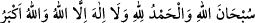
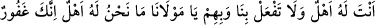
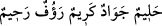

5- Kâfirûn Suresi
6- Âyete’l-kürsî
7- “
”
8- “
” diyerek Hz. Peygamber (s.a.)’e ve âilesine
salât ve selam getirmek.
9- “
(Allâh’ım, beni, ana-babamı ve îman
eden bütün erkek ve kadınları bağışla.)” diyerek istiğfar etmek.
10- Yine yedi kere;
(Allâh’ım! Sen bize ve onlara şimdi ve gelecekte din, dünyâ ve âhiret konusunda
bizim hak ettiğimizi değil, ey Mevlamız sana yaraşan muameleyi yap. Çünkü sen çok
bağışlayıcı, hilm sahibi, cömert, kerem sahibi, son derece şefkatli ve
merhametlisin.)” demek.
Rivâyete göre İbrâhim Teymî, bunları Hızır (a.s.)’dan öğrenip okuduktan sonra
rüyâsında cennete girdiğini gördü, melekleri ve peygamberleri gördü ve cennet
taâmından yedi. Cennet taâmından yediği için de dört ay hiçbir şey yemedi.
Zâkir/zikreden kimse, namaz kıldığı yerde kıbleye dönerek oturmaya devam eder.
Ancak bir köşeye çekilmeyi daha uygun görürse o başka. Çünkü o vakitte mekruh
görülen konuşma ve benzerlerine ihtiyaç duymamak üzere dîni için bu daha emindir.
Çünkü o vakitte dünyâ kelamı konuşmak amelin sevabını ve vaktin şerefini yok eder.
Mutlaka dili Allah’tan başkasını zikretmekten, kalbi de Allah’tan başkasını
düşünmekten korumak lâzımdır. Çünkü dil ve kalp birbirine uygun olmadıkları zaman
yapılan zikir, kapıda duranın boş velvelesi ve bekçinin damdan bağırması gibi olur.
Mesnevî’de şöyle denilmiştir:
Zikir fikri titretir, harekete getirir,
Zikri bu donmuş fikre güneş yap!
İşin aslı cezbedir ey kardeş,
Fakat işten kalıp o cezbeyi bekleme!
Çünkü o işi bırakmak nazlanmaya benzer,
Canıyla oynayan hiç nazlanabilir mi?
Ey oğul, ne kabul edilmeyi düşün, ne reddedilmeyi,
Sen dâimâ emri, nehyi gör, gözet!